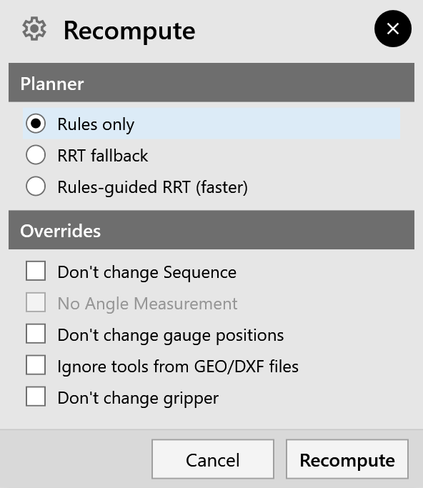
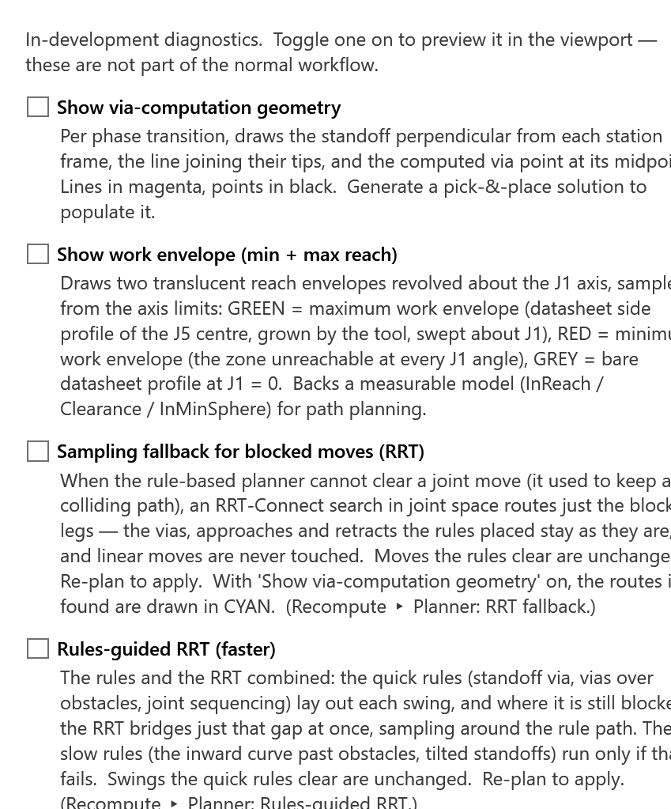

Re-planning
recompute on the rail plans the cycle again, with a planner you choose.
Plan again after you change the cell under a solution:
-
after you move a station or change its role;
-
after you add or show an obstacle;
-
after you change the gripper or the TCP;
-
after a collision the first plan could not avoid.
The Recompute panel

Choose a Planner and click Recompute. Cancel closes the panel without planning.
| Planner | What it does |
|---|---|
Rules only |
FRobot’s rule-based planner, the one FRobot starts with. Quick and predictable. |
RRT fallback |
The rules first. Where a swing is still blocked, a sampling search (RRT) finds a way round for just that move. Everything the rules planned stays. |
Rules-guided RRT (faster) |
The quick rules lay out each swing, and the sampling search bridges at once where it is still blocked. The slower rules run only if that fails. |
A toast confirms it, for example Recomputed with Rules-guided RRT (faster) — trajectories updated.
-
For the whole session: the planner you pick stays for every later plan, not just this one. That includes a new solution from Pick & Place Tech, a cell config loaded, a robot switch, and changes in the Pickup panel.
-
Saving: the planner choice is not saved. When FRobot starts, it is back to Rules only.
-
Regrip: swings at the Overturner always use the rules-guided search.
|
Note
|
Re-planning replaces every waypoint, including the ones you edited by hand. Edit waypoints after the last re-plan. |
|
Note
|
The Overrides in the panel are not used by the planner in this version. |
Experimental Features
Help ▸ Experimental Features… opens diagnostic views, and the same two planner switches.

| Switch | What it does |
|---|---|
Show via-computation geometry |
Draws how the planner routed each swing: magenta lines and black points, RRT routes in cyan |
Show work envelope (min + max reach) |
Draws the robot’s reach: green for the maximum, red for the zone it can never reach |
Sampling fallback for blocked moves (RRT) |
The RRT fallback planner |
Rules-guided RRT (faster) |
The Rules-guided RRT planner |
The planner switches act on the next plan; they do not plan by themselves. None of these switches is saved.